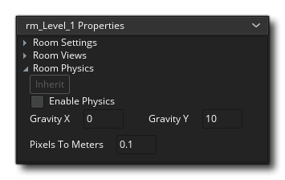

L'éditeur de salle est l'endroit où vous créez vos salles de jeux. Chaque jeu nécessite au moins une salle pour exécuter, et dans la salle, vous pouvez placer des instances, des sprites, des tuiles, des chemins et des arrière - plans. Chacun de ces différents atouts peut être placé sur son propre calque unique qui peut ensuite être commandé comme vous le souhaitez dans l' éditeur de calques. En raison de la complexité de l'éditeur de salle, nous allons d'abord vous donner un bref aperçu des fonctionnalités les plus importantes, puis vous trouverez des détails plus détaillés dans les en-têtes de section listés ci-dessous.
Lorsque vous créez une ressource de pièce, vous pouvez faire un clic droit  dans l'arborescence des ressources pour ouvrir le menu de la salle. Cela vous permettra de créer des salles enfants (voir Héritage ci-dessous), d'ouvrir les propriétés de la salle pour les modifier, d'ajouter un nouveau groupe de ressources pour mieux organiser les salles, renommer la salle ou la supprimer. Notez que vous pouvez cliquer et faire glisser une pièce vers le haut ou vers le bas dans l'arborescence afin de la repositionner, et faire glisser une pièce sur une autre pour l'afficher visuellement (elle apparaîtra en retrait sous l'autre pièce, normalement vous voudriez montrer l'héritage de parent / enfant), ou le faites glisser sur un dossier de groupe pour l'ajouter là.
dans l'arborescence des ressources pour ouvrir le menu de la salle. Cela vous permettra de créer des salles enfants (voir Héritage ci-dessous), d'ouvrir les propriétés de la salle pour les modifier, d'ajouter un nouveau groupe de ressources pour mieux organiser les salles, renommer la salle ou la supprimer. Notez que vous pouvez cliquer et faire glisser une pièce vers le haut ou vers le bas dans l'arborescence afin de la repositionner, et faire glisser une pièce sur une autre pour l'afficher visuellement (elle apparaîtra en retrait sous l'autre pièce, normalement vous voudriez montrer l'héritage de parent / enfant), ou le faites glisser sur un dossier de groupe pour l'ajouter là.
Notez que l'éditeur de pièce est lui-même un espace de travail et que vous pouvez cliquer  sur l'onglet et faites-le glisser hors de la fenêtre principale dans une nouvelle fenêtre de son propre chef - peut-être dans un autre affichage, par exemple. Vous pouvez également le replacer dans la fenêtre principale en faisant glisser l'onglet vers le haut de l'EDI et en relâchant le bouton de la souris.
sur l'onglet et faites-le glisser hors de la fenêtre principale dans une nouvelle fenêtre de son propre chef - peut-être dans un autre affichage, par exemple. Vous pouvez également le replacer dans la fenêtre principale en faisant glisser l'onglet vers le haut de l'EDI et en relâchant le bouton de la souris.
Interface
L'interface utilisateur de l'éditeur de salle est simple à parcourir et à diviser en plusieurs sections distinctes. Les parties de l'éditeur qui sont ancrées - les propriétés de la pièce et l'éditeur de calque ainsi que les différentes sections de propriétés de la couche - peuvent également être retirées du dock en les faisant simplement glisser dans l'espace de travail. à nouveau en les faisant glisser sur les côtés ou le bas de l'espace de travail.
L'éditeur de pièce place les choses sur des calques dans la pièce. Chaque couche est à une «profondeur» discrète, où ceux qui apparaissent au bas de la liste dans la fenêtre de calque seront dessinés sous ceux qui apparaissent près du sommet.
IMPORTANT! Il existe une profondeur de couche minimum et maximum de -16000 à 16000. Tout ce qui est placé sur un calque en dehors de cette plage ne sera pas dessiné bien que tous les événements continueront à fonctionner normalement.Les calques sont créés en cliquant
le bouton approprié pour le type de calque que vous souhaitez créer, à savoir:
Instance - ce type de couche contiendra toutes les instances pour votre jeu
Tuile - ce type de calque est utilisé pour dessiner des sprites en tant que jeux de tuiles
- Chemin - cette couche contient des données de chemin (vous ne pouvez avoir qu'un seul chemin par couche)
Asset - Identifiant de couche pour les éléments visuels à placer (ie: sprites)
Contexte - Ce type de couche définit un arrière-plan, qui est essentiellement une seule couleur ou une image qui est dessinée
Vous pouvez également créer un dossier de calque à l'aide du bouton de dossier
où vous pouvez regrouper les calques sélectionnés, ainsi que supprimer les calques sélectionnés avec le bouton Supprimer
. Chacun de ces types de couche est discuté ici plus en détail.
Notez que vous pouvez basculer l'héritage pour l'éditeur de calque, ce qui affectera l'ordre et la visibilité des calques. La visibilité elle-même peut être définie en cliquant sur l'icône de l'œil
à côté de chacune des couches, ou vous pouvez cliquer
.
La fenêtre des propriétés de la couche de pièce change en fonction du calque actuellement sélectionné dans l'éditeur de calque. Chaque fenêtre aura des propriétés et des listes différentes et vous serez en mesure d'éditer les détails fondamentaux de la façon dont la couche est affichée et ce qui est réellement sur la couche. S'il vous plaît voir ici pour plus de détails.
Les propriétés de la pièce sont divisées en trois sections:
La section Paramètres de la pièce est l'endroit où vous pouvez définir la bascule d'héritage pour les paramètres, ainsi que nommer la pièce et si elle est persistante ou non. Normalement, lorsque vous quittez une pièce et retournez dans la même pièce plus tard, cette pièce est réinitialisée à ses réglages initiaux. C'est généralement bien pour la plupart des jeux mais ce n'est peut-être pas ce que vous voulez, par exemple, un RPG ou un jeu non linéaire, où vous voulez aller et venir entre les salles et les laisser comme vous l'avez laissé la dernière fois. Cocher la case intitulée Persistent fera exactement cela. Le statut de la salle sera mémorisé et lorsque vous y reviendrez plus tard, il sera exactement le même que vous l'avez laissé, il sera seulement réinitialisé à l'état de départ lorsque le jeu sera réinitialisé. Notez qu'il existe une exception à cette règle: si vous avez marqué certains objets comme étant persistants, les instances de cet objet ne resteront pas dans la pièce mais passeront à la pièce suivante.
Après cela, vous avez la possibilité d' effacer le tampon d'affichage. Cette option est similaire à la précédente, seulement elle remplit le back-buffer d'une couleur. Si vous savez que les vues couvriront l'intégralité de l'écran à tout moment ou que vous avez un arrière-plan en plein écran, vous pouvez le décocher (ce qui permet d'économiser un redessin et donc d'optimiser votre jeu), mais si vous avoir des vues qui se chevauchent lorsque, à l'écran, laissez des espaces ouverts, ou que votre arrière-plan est transparent, vous devez vérifier cela pour que la zone où il n'y a pas de vue soit remplie avec la couleur de dessin de votre choix. Actuellement, cette couleur ne peut être définie via le code en utilisant window_set_colour().
NOTE: Si vous utilisez la correction automatique du ratio d'aspect (telle que définie dans les options de jeu ), vous devriez toujours la faire cochée sinon vous pourriez avoir des effets bizarres sur la "boîte aux lettres" dans laquelle votre jeu est dessiné. option alors vous pouvez décocher cela et obtenir un petit coup de pouce à la performance de vos jeux (surtout visible sur Android et d'autres plates-formes mobiles). En dessous, vous voyez la liste des vues disponibles (vous pouvez en définir au maximum huit) avec les informations sur l'emplacement de ces vues dans les cases ci-dessous. Tout d'abord vous devez indiquer si la vue doit être visible lorsque la pièce commence en cochant la case appropriée, et si vous souhaitez utiliser des vues, assurez-vous qu'au moins une vue est visible au début de chaque pièce. Les vues visibles sont indiquées en gras dans la liste des vues ci-dessus.Une pièce doit avoir une taille et ceci est défini par les valeurs que vous entrez pour sa largeur et sa hauteur en pixels, et une fois celle-ci définie, vous pouvez ensuite ajouter le code de création, si vous en avez besoin. Le code de création est ajouté à partir du bouton en bas (avec le bouton d'héritage pour indiquer si la pièce doit hériter son code de création ou non), et si vous cliquez dessus, vous ouvrez un éditeur de code. Cet éditeur vous permet d'entrer des fonctions et du code qui seront exécutés au début de la pièce, après l'événement de création de toutes les instances mais avant leur événement de démarrage de pièce. Ce code ne sera exécuté que la première fois que vous entrerez dans une pièce si la pièce est marquée comme persistante et que les visites suivantes ne seront pas exécutées.
Le bouton final dans les paramètres de la pièce vous permet d'ouvrir la fenêtre Ordre de création d'instance:
Cette fenêtre liste toutes les instances de la pièce dans l'ordre où elles seront créées (de haut en bas). Si vous souhaitez qu'une instance spécifique soit créée avant toute autre, vous pouvez simplement cliquer sur
Les vues de caméra donnent un mécanisme pour dessiner différentes parties de votre pièce à différents endroits de l'écran, ou pour dessiner juste une partie de votre pièce pour couvrir tout l'écran. Par exemple, dans la plupart des jeux de plateforme, la vue caméra suit le personnage principal, car si vous pouviez voir le niveau entier sur l'écran, votre personnage serait trop petit pour voir et il n'y aurait pas de surprises pour le joueur. Les vues caméra peuvent également être utilisées dans des jeux coopératifs multi-joueurs, car elles vous permettent de créer une configuration écran partagé dans laquelle, dans une partie de l'écran, vous voyez un joueur et dans une autre partie, vous voyez l'autre joueur. Un autre exemple concerne les jeux dans lesquels une partie de la pièce doit défiler (par exemple avec le caractère principal) tandis qu'une autre partie est fixe (par exemple un panneau d'état). Tout cela peut être facilement réalisé dans GameMaker Studio 2 utilisant des vues de caméra.
En haut des propriétés des vues, vous pouvez activer ou désactiver l'héritage de vue, puis une case intitulée Activer les fenêtres. Cela doit être marqué avant que l'une des vues puisse être active dans votre jeu. La case à cocher suivante est Clear Viewport Background, qui efface la surface de l'application avec la couleur de la fenêtre et peut être décochée si vous savez que vous dessinez pour couvrir toute la surface.
REMARQUE: Vous pouvez activer ou désactiver l'héritage pour les trois paramètres du port de vue principal, puis activer ou désactiver l'héritage pour chaque vue de caméra individuelle.Une vue de caméra est définie par deux ensembles de valeurs différents, la vue de caméra elle-même et le port sur l'écran où cette vue doit être dessinée. Cela peut parfois causer de la confusion, alors expliquons ceci un peu avant d'expliquer comment nous définissons chacun d'entre eux:
- La caméra: Un point dans la pièce qui sera utilisé pour définir l'affichage de la pièce à l'écran (c'est un pion abstrait dans l'éditeur de pièce et sa position est automatiquement définie en fonction des paramètres de vue et de port d'affichage)
- La vue: ce que voit la caméra, en fonction de la position, de la projection et de la rotation de la caméra
- The View Port: La zone de l'écran physique où la vue de la caméra sera affichée
Ainsi, par exemple, cela signifie que vous pouvez avoir une vue de caméra 640x480 dans votre pièce, puis définir le port sur 320x240, ce qui affichera la vue réduite à ce port de taille sur l'écran, et vous pouvez également faire la même chose et définissez la vue sur une valeur plus petite et le port sur plus grand, ce qui agrandit l'image pour l'adapter à la taille du port et s'afficher sur l'écran plus grand que ce qu'il est. De cette façon, vous pouvez maintenir une taille d'écran (port) tout en changeant la vue de la caméra pour afficher plus ou moins de la pièce dans la même zone de l'écran.
La vue de la caméra est toujours définie comme une zone rectangulaire dans la pièce, où vous spécifiez la position du coin supérieur gauche, la largeur et la hauteur de cette zone. Ensuite, vous devez spécifier où cette zone est affichée dans la fenêtre sur l'écran en définissant le port de vue, où vous spécifiez à nouveau la position du coin supérieur gauche et la taille (notez que rien d'autre que 0,0 pour le coin supérieur gauche peut donner des résultats étranges). Vous pouvez avoir plusieurs ports et ils peuvent se chevaucher, auquel cas ils sont dessinés dans l'ordre indiqué l'un au-dessus de l'autre. Veuillez noter que la zone globale de l'écran est toujours définie comme une zone rectangulaire. Vos ports, même lorsqu'ils sont décalés, formeront un rectangle, les espaces vides étant remplis par la couleur de la fenêtre, ce qui signifie que dans ces circonstances, Clear Display Buffer coché sinon vous obtiendrez des artefacts bizarres dessinés dans les espaces entre les ports.
REMARQUE: Sur les périphériques Windows8 SurfaceRT, il y a une limite de 2048x2048, ce qui signifie que le dessin ne peut pas dépasser ces dimensions (ni avec des vues, ni directement avec la fenêtre de jeu), sinon les graphismes du jeu seront altérés.L'option Suivi d'objet est pour quand vous voulez que la vue "suive" (c'est-à-dire: maintienne la vue focalisée sur) un certain objet. Pour ce faire, vous devez cliquer
Enfin, vous pouvez indiquer la vitesse à laquelle la vue se déplace lorsque le personnage a atteint la zone tampon, avec la valeur par défaut -1. Cette valeur par défaut est fondamentalement "instantanée" et signifie que le moment où l'objet suivant est en dehors de la bordure horizontale ou de la zone tampon de la bordure verticale, la vue passera à sa position actuelle. Maintenant, ce n'est pas toujours ce que vous voulez et vous pouvez donc définir la vitesse de défilement vertical et horizontal de la vue en réglant les valeurs sur autre chose que -1. Notez qu'une valeur de 0 fera que la vue ne bougera pas du tout, et que toute autre valeur positive correspond au nombre de pixels qu'elle déplacera à n'importe quelle étape, donc la définition de la vitesse horizontale à 5 fera suivre la vue à 5 pixels par marchez horizontalement.
Avant de pouvoir utiliser les fonctions physiques intégrées, vous devez cocher l'option Activer la physique en haut de cette section (vous pouvez également basculer l'héritage de cette section indépendamment du reste des paramètres de la pièce). Une fois cela fait, vous pouvez continuer à configurer les propriétés du monde physique, qui sont des propriétés de base que vous devez avoir prédéfinies avant que votre pièce ne permette aux instances de physique de fonctionner comme telles. Pour un contrôle plus précis sur le monde, vous pouvez utiliser le code (voir - Les fonctions physiques pour plus d'informations).
La prochaine chose que vous devez faire est de mettre en place la gravité du monde. La force et la direction de ceci sont calculées comme un vecteur de la position x / y que vous définissez autour d'un point (0, 0). Donc, un x de 0 et ay de 1 mettra la direction de la gravité comme étant vers le bas avec une force de 1 mètre par seconde (pour une explication plus détaillée voir - Le Monde Physique: Gravité ). Enfin, vous devez définir le taux de Pixels To Meters pour GameMaker Studio 2 à utiliser comme base pour tous ses calculs de physique. C'est parce que les fonctions physiques fonctionnent sur des mesures du monde réel, c'est pourquoi nous devons définir cette valeur, et vous voudrez ajuster ce paramètre jusqu'à ce que la taille moyenne des pixels que vous utilisez traduise grossièrement en objets physiques simulés d'un taille appropriée.
Certains types de couche auront des outils supplémentaires ajoutés au sommet de l'EDI dans la Boîte à outils (par exemple, des couches de tuiles ou des couches de chemin). Les outils exacts changeront selon le type de couche en cours d'édition, et sont donc expliqués dans les sections traitant de chaque couche, ci-dessous.
En haut du canevas principal de Room Editor, vous disposez de quelques commandes pour gérer la façon dont les choses sont affichées. Elles sont:
- Basculer la grille de toile
: Ceci active / désactive la grille de montage de l'éditeur de pièces. Il s'agit d'une grille que GameMaker Studio 2 dessine sur le canevas principal pour le diviser en sections, et qui par défaut est de taille 32x32px. Cependant, si vous cliquez sur l'icône du menu Grille
vous allez ouvrir les options de la grille:
Ces options vous permettent de définir la couleur et l'alpha de la grille, ainsi que les valeurs des cellules de la grille le long des axes X et Y. Vous avez également une option pour activer ou désactiver l'accrochage à la grille ici (activé par défaut). Vous pouvez utiliser les raccourcis clavier " G " et
+ " G "pour basculer la visibilité de la grille et l'accrochage de la grille respectivement.
- Contrôles de zoom sur toile
: Ces boutons contrôlent le niveau de zoom de la toile en cours. Vous pouvez effectuer un zoom avant ou arrière et cliquer sur Le bouton réinitialisera le canevas à 1: 1 avec la pièce en cours d'édition. Vous pouvez également cliquer sur le bouton Adapter à la fenêtre pour adapter la toile entière de la pièce à l'espace de travail de l'éditeur en cours (cela fera un zoom avant / arrière selon le cas pour l'ajuster). Notez que vous pouvez également effectuer un zoom avant et arrière en utilisant
/
et la roue de la souris
et en appuyant sur
- Afficher les vues
: Cliquer sur ceci activera ou désactivera le rectangle de vue. Lorsque cette option est activée, une zone en surbrillance indique les différentes vues activées pour la pièce.
- Jouer des animations : Lors de l'ajout de sprites, de ressources ou de mosaïques animées, vous pouvez avoir une idée de la façon dont elles apparaîtront dans la pièce sans avoir à compiler. Vous pouvez donc cliquer dessus pour lancer toutes les animations en cours. Cliquez à nouveau pour arrêter l'animation.
- Canvas Select à partir de n'importe quel calque
: Par défaut, lorsque vous cliquez sur un élément dans le canevas de la pièce, vous ne pouvez sélectionner que les actifs qui sont sur le calque en cours d'édition. Cependant, si vous activez cette option, vous pouvez cliquer sur n'importe quel élément. changer la couche cible à celle sur laquelle l'élément est. Vous pouvez utiliser le raccourci clavier " P "pour activer temporairement ceci (maintenez" P "activer et libérer pour désactiver"
Le centre de la fenêtre de l'éditeur de pièce est occupé par la zone où se déroule toute l'édition. C'est ici que vous allez placer vos instances et vos ressources, dessiner vos tuiles, ou positionner vos chemins. Vous pouvez effectuer un zoom avant et arrière en utilisant la molette de la souris ou les commandes de la pièce en haut, et vous pouvez faire un panoramique en tenant le bouton central de la souris
+
Lors de la création de couches d'actifs ou de couches d'instance, vous pouvez placer l'actif ou l'instance en le faisant simplement glisser depuis l'arborescence des ressources, puis en le déposant là où vous souhaitez qu'il soit positionné. Vous pouvez également sélectionner un actif ou une instance dans l'arborescence des ressources, puis appuyer longuement sur
pour prévisualiser la ressource "in-situ", et si vous cliquez en plus sur le bouton gauche de la souris
Pour les chemins, vous pouvez créer une nouvelle ressource chemin et chemin dans l'éditeur de salle ou créer une nouvelle ressource, puis la faire glisser dans la fenêtre de l'éditeur principal, comme vous le feriez pour une instance, puis modifier le chemin et ses connexions la fenêtre de l'éditeur aussi. Pour les ensembles de tuiles, vous pouvez les "peindre" depuis l'éditeur de jeu de tuiles.
Notez que vous pouvez sélectionner et déplacer ou supprimer plusieurs éléments d'un même calque en maintenant la touche enfoncée.
La barre d'état est utilisée pour afficher des informations spécifiques au contexte. La barre d'état vous montrera toujours où se trouve le curseur de la souris dans la pièce, mais elle affichera également des informations supplémentaires basées sur le calque en cours d'édition, l'outil utilisé et l'état de cet outil.


Héritage
La fonction la plus importante de l'éditeur de salle est peut-être l' héritage. Héritage signifie que vous pouvez créer une pièce "parent" puis créer une pièce "enfant" qui héritera de toutes les propriétés de la pièce parent. Cette pièce enfant est essentiellement un clone du parent, et tout ce qui s'y trouve est lié à la pièce parent. Cela signifie que si vous modifiez la vue dans le parent, ou déplacez une mosaïque, ou ajoutez des instances, elle sera reflétée dans la pièce enfant. Non seulement cela, dans la salle des enfants, vous pouvez sélectivement désactiver l'héritage pour des couches spécifiques, des instances, des actifs ou toute autre chose qui est nécessaire. Une pièce possédant des propriétés héritées aura les boutons d' héritage allumés, comme indiqué par l'image ci-dessous, et vous pourrez ensuite les utiliser pour activer ou désactiver l'héritage pour la couche ou la ressource donnée, etc... 
Cela peut être difficile à visualiser au début, alors regardons un exemple: disons que vous avez une pièce avec une ville et un château au milieu. La ville et le château sont dessinés en utilisant différentes couches de tuiles et vous avez également des instances et des chemins que les PNJ peuvent utiliser pour se promener. Vous voulez l'avoir pour que dans le jeu le château soit détruit, mais tout le reste de la ville ressemble et se comporte de la même manière. Vous créez la pièce initiale avec tout comme d'habitude, puis vous créez une pièce enfant qui hérite des couches de la pièce parent. Dans la salle des enfants, vous désactivez l'héritage pour la couche de tuiles (ou même les tuiles individuelles) pour la zone du château et les déplacez / ajoutez / supprimez les tuiles pour créer l'apparence du château détruit. Quand un joueur entre dans cette pièce, toutes les instances de la salle des parents et toutes les tuiles etc... resteront exactement les mêmes, à l'exception de celles du château détruit.
Pour créer un héritage de pièce, il vous suffit de sélectionner la pièce à partir de laquelle vous souhaitez créer un enfant, puis cliquez avec le bouton droit de la souris  . Cela ouvrira le menu de la salle et vous pourrez sélectionner Créer un enfant pour créer une nouvelle salle d'enfant. Cela sera créé et "attaché" visuellement au parent dans l'arborescence des ressources:
. Cela ouvrira le menu de la salle et vous pourrez sélectionner Créer un enfant pour créer une nouvelle salle d'enfant. Cela sera créé et "attaché" visuellement au parent dans l'arborescence des ressources: 
Vous pouvez également faire glisser n'importe quelle pièce de l'arborescence des ressources vers une autre pièce de l'arborescence des ressources pour qu'elle devienne un enfant de cette pièce (ou faire glisser une pièce enfant d'un parent et rompre l'héritage). Notez que l'héritage est multicouche et que vous pouvez cocher des éléments individuels, des groupes d'éléments sur un même calque, des propriétés d'élément ou des pièces entières, et hériter de pièces consécutives (la pièce C hérite de la pièce B, qui dans tour a hérité de la salle A). Si vous créez une pièce de base avec rien à l'exception de la configuration de la vue - par exemple - vous pouvez ensuite créer toutes les pièces supplémentaires comme étant ses enfants. Mais vous pouvez aller plus loin et créer une autre pièce de base avec la pièce "vue" en tant que parent qui contient l'instance générale de l'interface graphique et les contrôleurs requis dans chaque salle de jeux. Maintenant, vous pouvez créer des salles enfants à partir de cela et ils hériteront à la fois des contrôleurs et des interfaces graphiques de la salle parent ainsi que de la configuration de la vue depuis le parent de cette salle!
Comme vous pouvez le voir, l'héritage est très puissant et vous pouvez l'utiliser pour maintenir une structure de salle beaucoup plus propre, accélérer le flux de travail et généralement optimiser le temps que vous passez à faire et à concevoir des pièces.
Couches
Pour commencer, tout ce qui entre dans la pièce que vous créez est placé sur une couche. Les calques peuvent être ajoutés, supprimés et triés à partir de l' éditeur de calques, et sont disponibles dans différents types, chacun avec son propre ensemble d'options et sa façon de travailler. Vous n'êtes pas limité au nombre de chaque type de couche, et pouvez avoir plusieurs couches de tuiles, ou couches de chemin, ou couches d'instance, etc... Chaque type de couche a sa propre fenêtre de propriétés où vous pouvez définir différentes choses en fonction de le type de couche. Vous pouvez également basculer la visibilité des couches, les couches invisibles n'étant pas traitées lors de l'exécution (mais vous pouvez les rendre à nouveau visibles à tout moment à l'aide de la fonction de calque appropriée). 
L'image ci-dessus montre l'éditeur de calque, avec les calques courants étant listés en haut, et les différents boutons pour créer des calques en bas. Vous pouvez renommer n'importe quelle couche de cet éditeur en faisant un double clic sur le nom (notez que vous ne pouvez utiliser que des lettres et le caractère "_" pour les noms) et vous pouvez également activer ou désactiver sa visibilité en cliquant sur icône de l'oeil  . Si la pièce a hérité de couches d'une pièce parent, vous pouvez basculer l'héritage à partir du bouton situé en bas, mais notez que cela affecte tous les calques. Vous pouvez aussi utiliser
. Si la pièce a hérité de couches d'une pièce parent, vous pouvez basculer l'héritage à partir du bouton situé en bas, mais notez que cela affecte tous les calques. Vous pouvez aussi utiliser  ou
ou  /
/  et clic gauche
et clic gauche  sur plusieurs calques pour les sélectionner pour la duplication ou la suppression (ces options sont disponibles à l'aide de la souris droite
sur plusieurs calques pour les sélectionner pour la duplication ou la suppression (ces options sont disponibles à l'aide de la souris droite  Menu).
Menu).
Pour vous aider à trier vos calques et à les conserver, vous pouvez créer des groupes de calques dans un dossier de calque en cliquant sur l'icône du dossier.  . Vous pouvez également supprimer un ou plusieurs calques sélectionnés en cliquant sur le bouton Supprimer
. Vous pouvez également supprimer un ou plusieurs calques sélectionnés en cliquant sur le bouton Supprimer  . Toutes les couches auront également une valeur de profondeur, qui définit où dans l'ordre de dessin cette couche sera placée lors du rendu de son contenu dans la pièce. Les couches sont dessinées de la plus grande profondeur à la plus basse, de sorte qu'une couche à une profondeur de -100 sera dessinée sur une couche d'une profondeur de 200.
. Toutes les couches auront également une valeur de profondeur, qui définit où dans l'ordre de dessin cette couche sera placée lors du rendu de son contenu dans la pièce. Les couches sont dessinées de la plus grande profondeur à la plus basse, de sorte qu'une couche à une profondeur de -100 sera dessinée sur une couche d'une profondeur de 200.
Si vous faites un clic droit  sur n'importe quelle couche, vous obtenez le menu de calque:
sur n'importe quelle couche, vous obtenez le menu de calque: 
Ici, vous pouvez ouvrir la fenêtre des propriétés de la couche pour le calque sélectionné, supprimer le calque, renommer le calque ou ajouter un sous-calque. Si vous choisissez d'ajouter un sous-calque, le calque courant recevra une icône "dossier" pour montrer qu'il y a des sous-calques attachés, et le nouveau calque sera créé en dessous, tabulé vers la droite. Vous pouvez ensuite choisir de faire en sorte que la sous-couche hérite de ses propriétés du calque parent et également définir si elle doit hériter de la visibilité de la couche parente.
Notez que vous pouvez faire glisser les calques vers le haut ou vers le bas dans la fenêtre pour les réorganiser. Vous pouvez également sélectionner et déplacer plusieurs calques à l'aide de l'un ou l'autre.  +
+  pour sélectionner d'une couche à l'autre (y compris toutes les couches intermédiaires) ou
pour sélectionner d'une couche à l'autre (y compris toutes les couches intermédiaires) ou  /
/  +
+  pour sélectionner les couches une à la fois. Si vous placez les couches au-dessus d'un dossier de couches, elles seront déplacées et définies en tant que sous-couches du dossier dans lequel vous les avez déposées. Vous pouvez également verrouiller les calques pour qu'ils ne puissent pas être modifiés par erreur.
pour sélectionner les couches une à la fois. Si vous placez les couches au-dessus d'un dossier de couches, elles seront déplacées et définies en tant que sous-couches du dossier dans lequel vous les avez déposées. Vous pouvez également verrouiller les calques pour qu'ils ne puissent pas être modifiés par erreur.
Vous pouvez ajouter un nouveau calque d'arrière-plan en cliquant sur
Lorsque vous créez un nouveau calque d'arrière-plan, il est vide par défaut et dessine donc la couleur d'arrière-plan définie. Si vous n'attribuez pas d'image-objet à l'image du calque d'arrière-plan, c'est ce qui sera dessiné à la place, et vous pouvez cliquer sur la case de couleur pour ouvrir le sélecteur de couleur et changer la couleur utilisée. Si vous choisissez un sprite, vous pouvez alors cocher les options de mosaïque pour le coller horizontalement ou verticalement, ou pour l'étirer pour remplir toute la pièce.
Si vous souhaitez que l'arrière-plan défile dans une direction, vous pouvez également définir la vitesse horizontale et / ou verticale (chaque étape du jeu se déplacera le long de l'accès donné par le nombre de pixels que vous définissez ici), et vous pouvez également -position de l'image d'arrière-plan en définissant les valeurs de décalage x et y. Vous pouvez également définir la vitesse d'animation pour l'arrière-plan si la ressource d'image-objet que vous avez sélectionnée comporte plusieurs sous-images, bien que celle-ci soit verrouillée par défaut sur la valeur que vous avez définie dans l'éditeur de sprites pour l'image utilisée. Enfin, vous pouvez définir explicitement la profondeur de la couche, bien que par défaut celle-ci soit verrouillée et que vous puissiez simplement faire glisser et réorganiser l'ordre des calques dans l'éditeur de calques pour modifier cette valeur.
Notez que vous pouvez également basculer l'héritage d'un arrière-plan à partir de cette fenêtre en cliquant sur le bouton tout en haut.
Vous pouvez ajouter une nouvelle couche d'instance en cliquant sur
Cette fenêtre affiche simplement une liste de toutes les instances qui sont actuellement sur la couche. Vous pouvez ajouter plus d'instances à une couche en ouvrant l'arborescence des ressources, puis en faisant glisser des objets à partir de là dans la pièce, ou bien vous pouvez sélectionner une instance dans l'arborescence des ressources, puis appuyer longuement sur
La liste des calques peut être commandée en cliquant
Double-cliquer
Par défaut, l'instance aura un nom comme "inst_38B0BFF", mais ceci peut être changé en tout ce que vous voulez tant que le nom utilise uniquement des caractères alphanumériques et la barre de soulignement "_" (et pas d'espaces). Cependant, il vaut la peine de noter que le nom donné ici (que ce soit celui que vous donnez ou celui que l'IDE donne par défaut) est considéré comme un constant et doit donc être unique à l'instance. Cela signifie également qu'il peut être utilisé dans le code n votre jeu pour identifier l'instance, mais seulement si vous êtes dans la même pièce que l'instance.
Sous le nom de l'instance, vous pouvez définir si l'instance à hériter de la pièce parent, modifier l'objet dont vous voulez qu'il soit une instance ou même ouvrir l' éditeur d'objets pour y modifier les propriétés. Vous pouvez également ouvrir dans une nouvelle fenêtre l'éditeur d'objets pour l'instance si vous souhaitez y modifier quelque chose, et vérifier et modifier les variables via la fenêtre Variable d'objet (pour plus d'informations sur les variables d'objet, voir la section ici ). Vous pouvez également modifier les caractéristiques de cette occurrence, définir une couleur pour la fusionner (blanc par défaut) ou la faire pivoter et inverser, ainsi que mettre à l'échelle l'instance le long de l'axe et définir sa position dans la pièce.
Enfin, vous pouvez donner à l'instance un code de création qui sera exécuté directement après le code d'événement de création d'objet et qui est unique à cette instance (vous pouvez donc définir une variable dans l'objet que toute instance aura alors modifiée dans la création code pour que ce soit une valeur unique pour une instance). En cliquant dessus, une fenêtre de code sera ajoutée à l'instance où vous pourrez ajouter des fonctions ou modifier des variables. Notez que vous pouvez activer ou désactiver l'héritage du code de création indépendamment de l'héritage de l'instance.
Il est à noter que chaque instance sur une couche est automatiquement marquée pour l'exportation lorsque le jeu est fait. Cependant, particulièrement lorsque vous travaillez avec l'héritage, il se peut que vous ne souhaitiez pas que des instances spécifiques soient ajoutées à la pièce dans le jeu final (ou vous pouvez avoir une instance de débogage dans chaque pièce et vous voulez simplement l'exclure du jeu final ). Si tel est le cas, il vous suffit de décocher la case "Exporter" à gauche de l'instance dans la liste pour l'empêcher d'être exportée dans le cadre de l'exécutable. Il est important de noter, cependant, que si vous avez un code qui fait référence à cet objet, alors le jeu ne fonctionnera pas correctement, donc utilisez cette fonctionnalité avec précaution.
Vous pouvez ajouter un nouveau calque de tuiles en cliquant sur le
Dans les propriétés de la couche de tuile, vous pouvez basculer l'héritage pour la couche, changer l'ensemble de tuiles utilisées et définir le décalage x ou y pour la couche si vous voulez que la grille de calques ne soit pas alignée avec la position (0, 0) de la Chambre. Vous pouvez également définir la profondeur à laquelle le calque doit être rendu (avec son propre bouton d'héritage) et vous pouvez également "verrouiller" cette profondeur, ce qui empêchera toute autre modification.
Lorsque la fenêtre des propriétés de la couche s'ouvre, elle ouvrira également la fenêtre d' édition des carreaux, qui montre l'ensemble de tuiles utilisé (si vous fermez cette fenêtre par erreur, vous pouvez l'ouvrir à nouveau dans le menu Salle > Édition de carreaux ).. Vous pouvez cliquer
Notez que la fenêtre de pinceau vous permet d'effectuer un zoom avant et arrière sur la tuile avec la molette de la souris ou les boutons en haut, et vous pouvez effectuer un panoramique en utilisant
En haut de l'éditeur de pièce, lorsque vous avez sélectionné une couche de tuiles, vous verrez un ensemble d'outils spécifiques aux tuiles:
Ceci est l'outil de crayon. Il utilise la vignette sélectionnée pour peindre dans l'éditeur de pièce avec le bouton gauche de la souris . Notez que la valeur d'index de la vignette est affichée en bas dans la barre d'état de la pièce dans l'éditeur de pièce et si plusieurs vignettes sont sélectionnées pour peindre (c'est-à-dire une brosse), une liste de tous les vignettes.
Avec l'outil Gomme, vous pouvez utiliser le bouton gauche de la souris L'outil de remplissage vous permet de remplir une couche de tilemap complète ou une sélection de mosaïques avec la brosse de mosaïque actuelle. La brosse que vous utilisez peut être une seule tuile ou une brosse composite composée de plusieurs tuiles, ou même une tuile de la bibliothèque d'animation et un clic Lorsque vous sélectionnez l'outil de ligne, cliquez sur Lorsque vous sélectionnez l'outil Rectangle, cliquez sur C'est l'outil de sélection, qui peut être utilisé pour définir une zone de la couche de tuile pour travailler. Vous pouvez cliquer sur le bouton gauche de la souris . Lorsque vous avez sélectionné une zone d'une couche de tuiles, le reste des outils (Crayon, Retourner, Tourner, etc...) ne fonctionnera que dans la zone sélectionnée. Notez que vous pouvez également copier (
En cliquant sur cet outil, vous activez le style de peinture Auto-carrelage. Lorsque cette option est active, vous pouvez sélectionner n'importe quelle mosaïque dans l'onglet Bibliothèques Autotile, puis la peindre dans la couche GameMaker Studio 2 et GameMaker Studio 2 la modifiera automatiquement pour correspondre aux mosaïques environnantes, à condition que vous ayez correctement configuré l' onglet Mosaïque automatique. Notez que la sélection d'une mosaïque du jeu de mosaïques qui ne fait pas partie des bibliothèques Autotile réinitialise l'outil de dessin à l'outil Crayon standard. Avec cet outil, vous pouvez activer / désactiver l'héritage pour des tuiles spécifiques sur un calque donné. Pour que cela fonctionne, la pièce doit d'abord être une pièce enfant et la couche doit avoir son héritage activé dans les propriétés de la couche. Dans cet état, l'éditeur de la salle colorera par défaut toutes les mosaïques héritées et cliquera sur le bouton droit de la souris Cliquer sur l'outil Flip avec le bouton gauche de la souris Cliquer sur l'outil Miroir avec le bouton gauche de la souris Cliquer sur l'outil Rotation avec le bouton gauche de la souris Lorsque vous peignez des carreaux dans la pièce, vous pouvez ajouter avec un clic gauche
Notez que si vous utilisez l' outil de sélection
Pour sélectionner un groupe de mosaïques dans le canevas de l'éditeur de pièces, puis les couper ou les copier, elles deviendront temporairement le pinceau actuel pour la peinture.
Pour plus d'informations et des options plus avancées relatives à la couche de tuiles, veuillez consulter la section:
Vous pouvez ajouter une nouvelle couche de chemin en cliquant sur bouton. Cela va ajouter le nouveau calque, puis ouvrir la fenêtre des propriétés du chemin:
Ici, vous pouvez sélectionner le chemin de l'arbre de ressources à utiliser pour le calque, puis modifier le type de connexion défini ( lisse ou droit ), ainsi que la fermeture ou non et la précision avec laquelle le chemin doit être créé. Notez également que vous pouvez basculer l'héritage ici, et que vous pouvez définir le chemin d'accès à une couleur spécifique (la couleur par défaut est rouge) pour les voir mieux dans l'éditeur. Si aucune ressource de chemin n'est définie, vous pouvez cliquer sur le bouton Nouveau pour en créer un. Les couches de chemin ont également une valeur de profondeur qui leur est associée (verrouillée par défaut) même si rien n'est réellement rendu dans votre jeu lorsque vous les utilisez.
Il est à noter que vous pouvez également ajouter des points au chemin en cliquant
Si vous faites un clic droit
Ici vous pouvez inverser la direction du chemin (cela aura peu d'effet visible, mais inversera l'ordre dans lequel les points de chemin sont comptés de sorte que le point de départ devienne le point final et vice-versa), et inversera horizontalement ou verticalement. Vous pouvez également supprimer le point sélectionné dans ce menu. Notez que vous pouvez maintenir " T "," S " ou " R " puis clique
Vous pouvez ajouter une nouvelle couche d'actifs en cliquant sur
Une couche d'actif est simplement une image-objet placée dans la pièce et vous pouvez la placer en la faisant glisser depuis l'arbre des ressources ou en sélectionnant celle que vous voulez dans l'arbre des ressources, puis en utilisant
Une fois que vous placez un actif dans la pièce, vous avez un certain contrôle sur son apparence en double-cliquant
De là, vous pouvez attribuer un nom unique à l'élément, définir s'il doit hériter de la pièce parent ou modifier l'image-objet que vous souhaitez afficher. Vous pouvez également modifier les caractéristiques de cet élément de sprite, en définissant une couleur pour le mélanger (blanc par défaut) ou en le faisant pivoter et inverser. Vous pouvez également mettre à l'échelle l'instance le long de l'axe ou de l'axe et définir sa position dans la pièce. Si l'image-objet comporte des sous-images, vous pouvez choisir la vitesse d'animation et définir l'image initiale à afficher, bien que celle-ci soit verrouillée par défaut sur la vitesse d'animation définie pour l'image dans l'éditeur de sprites.
Il est à noter que chaque sprite sur une couche est automatiquement marqué pour l'exportation lorsque le jeu est fait. Cependant, en particulier lorsque vous travaillez avec l'héritage, il se peut que vous ne souhaitiez pas que des sprites spécifiques soient ajoutés à la pièce dans la partie finale. Si tel est le cas, décocher simplement la case "Exporter" à gauche de l'image-objet dans la liste l'empêchera d'être exporté dans le cadre de l'exécutable. Il est important de noter, cependant, que si vous avez un code qui fait référence à cet actif sprite, le jeu ne fonctionne pas correctement, donc utiliser cette fonctionnalité avec soin.


Menu contextuel
En dehors des outils de l'éditeur, vous verrez également un nouveau menu déroulant en haut de l'EDI. Ces menus sont expliqués ci-dessous:
Cela ré-ouvrira la fenêtre de l'éditeur de calques si vous l'avez fermé à tout moment.
Cela ré-ouvrira la fenêtre Propriétés de la pièce si vous l'avez fermée à tout moment.
Cela ré-ouvrira la fenêtre Propriétés de la couche si vous l'avez fermée à tout moment.
Cela ouvrira la fenêtre Instance Creation Order (qui peut également être ouverte en utilisant le bouton dans la fenêtre Room Settings ):
Cela réinitialisera la disposition de la fenêtre de l'éditeur de salle à ses valeurs par défaut pour l'espace de travail de bureau actuellement ciblé.
Lorsque vous travaillez avec un calque de tuiles, cette option sera mise en surbrillance dans le menu déroulant. Il a le sous-menu suivant:
Lorsque vous modifiez le calque de carreaux, vous pouvez sélectionner plusieurs carreaux en cliquant, en maintenant enfoncé et en faisant glisser le bouton gauche de la souris.
L'option Convertir l'image en Tilemap est un outil puissant qui peut être utilisé pour importer une seule image, puis extraire les carreaux utilisés de l'image et la recréer en tant que couche de tilemap dans l'éditeur de pièce.. Lorsque vous sélectionnez cet outil, il vous sera demandé de fournir un fichier image non compressé ( PNG, GIF ou BMP ) qui sera ensuite chargé. Au chargement, vous serez présenté avec l'outil Image Import:
Vous trouverez ici des options sur la façon de diviser la mosaïque lors de la création du mosaïque, et vous pouvez définir la largeur et la hauteur de la cellule ainsi que les décalages requis autour des bords. Vous pouvez également définir la largeur approximative (en pixels) de l'image-objet finale créée. Par exemple, si le jeu de mosaïques est constitué de cellules mosaïques 64 x 64 et que vous définissez ici une largeur de 200, l'image-objet finale créée pour l'ensemble de mosaïques aura une largeur de 192 pixels (c.-à-d. Si vous laissez la valeur par défaut à 0, alors GameMaker Studio 2 tentera de faire en sorte que "carré" soit un sprite avec environ le même nombre de cellules de tuiles horizontales et verticales.
Après avoir défini la manière dont l'image doit être divisée, cliquez sur l'échantillon à côté de l'option Supprimer la couleur pour ouvrir le sélecteur de couleur et vous permettre de sélectionner une couleur à supprimer de l'image-objet finale. Il s'agit généralement d'une couleur d'arrière-plan que vous souhaitez supprimer et la définition de cet échantillon sur autre chose que 100% de transparence (alpha 0) supprimera la couleur sélectionnée lors de l'importation.
Enfin, vous avez la possibilité de nommer la couche de sprite, tileset et tilemap qui sera créée pour vous par cet outil. Lorsque vous finaliserez l'importation, un sprite contenant toutes les images disposées dans une grille sera créé, ainsi qu'un jeu de pièces à partir de ce sprite. Dans la pièce, une nouvelle couche de tilemap sera créée et l'image sera reproduite à l'aide du tileset généré. Notez que l'outil ne dupliquera pas les mosaïques et reconnaîtra à la place lorsqu'une cellule a des données d'image qui coïncident avec une autre cellule (ceci inclut les tuiles pivotées). Vous pouvez voir ceci dans l'image suivante où seulement une tuile de fleur a été créée et une tuile de caisse aussi, pourtant il y a plusieurs instances des deux, avec quelques instances tournées dans l'image de base: